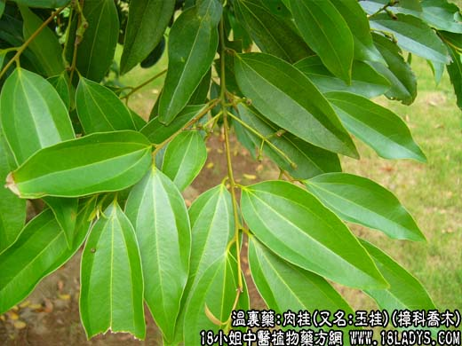

【中药概述】
肉桂(又名:玉桂)为樟科乔木植物肉桂的树皮。辛、甘，热。归肾、脾、心、肝经。
1．温肾助阳：用于肾阳不足，命门火衰，畏寒肢冷，阳萎尿频等，如<右归丸>、<肾气丸>、<桂附理中丸>。
2．温中散寒：用于脾肾阳虚，脘腹冷痛，脾胃虚寒冷痛（虚寒性胃痛）。如（三因方<桂苓丸>）。
3．温通经脉：用于寒凝血滞或虚寒性的痛经等，如<理阴煎>、<十全大补汤>。
4．用于肾阳衰弱，火不归元的怔忡不寐等，如<交泰丸>。
【药效鉴别】
肉桂温中止痛，归脾肾而除痼冷，温通经脉、鼓舞血气，入营血而弭阴寒，所谓引火归元，无非温肾之效；有助气化，实亦散寒之功耳。
【应用与配伍】
1．用于肾阳衰弱的阳痿官冷，虚喘心悸等。本品甘热助阳补火，为治命门火表之要药。常用治肾阳不足，命门火衰的阳痿宫冷，腰膝冷痛，夜尿频多，滑精遗尿等，多与附子、熟地、山萸肉等同用，如肾气丸、右归饮。若治下元虚衰，虚阳上浮的面赤、虚喘、汗出、心悸、失眠、脉微弱者，可用本品以引火归源，常与山茱萸、五味子、人参、牡蛎等同用。
2．用于心腹冷痛，寒疝作痛等。本品甘热助阳以补虚，辛热散寒以止痛。治寒邪内侵或脾胃虚寒的皖腹冷痛，可单用研末，酒煎服，或与干姜、高良姜、革茇等同用。治脾肾阳虚的腹痛呕吐、四肢厥冷、大便溏泄，常与附子、人参、干姜等同用，如桂附理中丸。治寒疝腹痛，多与吴某萸、小菌香等同用。
3．用于寒痹腰痛，胸痹，阴疽。本品辛散温通，能通行气血经脉、散寒止痛。治风寒湿痹，尤以治寒痹腰痛，本品颇为常用，多与独活、桑寄生、杜仲等同用，如独活寄生汤。治胸阳不振，寒邪内侵的胸痹心痛，可与附子、干姜、川椒等同用。治阳虚寒凝之阴疽，亦取本品甘热助阳以补虚，辛热散寒以通脉，可与鹿角胶、炮姜、麻黄等同用，如阳和汤。
4.用于闭经，痛经。本品辛行温通力强，温经通脉功胜，故可用治冲任虚寒，寒凝血滞的闭经、痛经等证，可与当归、川芎、小茵吞等同用，如少腹逐瘀汤。
此外，久病休虚气血不足者，在补气益血方中，适加肉桂，能鼓舞气血生长。
【药理作用】
1．对中枢神经系统的作用：桂皮醛以250～500mg／kg灌胃，能减少小鼠自发活动，对抗苯丙胺产生的过度活动；桂皮醛还可对抗阿朴吗啡及去氧麻黄碱的运动兴奋，使体温下降，但对抗利血平引起的体温下降；用小鼠压尾法或腹腔注射醋酸扭体法表明桂皮醛有镇痛作用；认为桂皮醛的中枢作用与中枢单胺能神经原的活动有关。
2．对心血管系统的作用：肉桂水提物及挥发油对大鼠在冰水应激状态下内源性儿茶酚胺分泌增加所致的血小板聚集及心肌损伤有一定对抗及保护作用；肉桂煎剂可使麻醉犬冠脉、脑血流量增加，血管阻力下降；肉桂煎剂、桂皮醛及香豆素对ADP诱导大鼠血小板聚集有抑制作用。
3．抗溃疡作用：肉桂水提物腹腔注射，可防止大鼠应激性溃疡，灌胃或腹腔注射也可抑制5-羟色胺引起的大鼠胃溃疡，抗溃疡作用不仅由于抑制胃液分泌，而且促进胃粘膜的血流量。
4．抗变态反应：肉桂水提物有抗变态反应的作用，对补体依赖性的反应如Ⅱ型的反向皮肤过敏反应（RCA）、福斯曼皮肤血管炎（FCV）及Ⅲ型的Arthus反应均有明显抑制作用。
其他，肉桂的乙醚及乙醇浸出液对革兰氏阳性菌及真菌有抑菌作用。
【化学成分】
主含桂皮醛、肉桂酸钠，粘液，鞣质等。除药用外，常作调料使用。
【用量用法】
2——5g，入煎剂应后下。研末冲服，或入丸剂。
【使用注意】
阴虚火旺、里有实热、血热妄行者忌。
【注】
板桂为剥取15年以上老肉桂树的树皮，呈板片状，较厚油多，嚼之渣少。
【附】
桂心（系肉桂之干燥枝皮或干皮，割去栓皮后，经水润切片）。《本经逢源》中云其“专温营分之里药，故治九种心痛、腹内冷痛，与经络躯壳之病无预，非若肉桂之兼通经脉、和营
血、坚筋骨，有寒湿风痹等治也”。
【注2】
桂心为加工上述肉桂时余下的边条，削去外部栓皮即得。